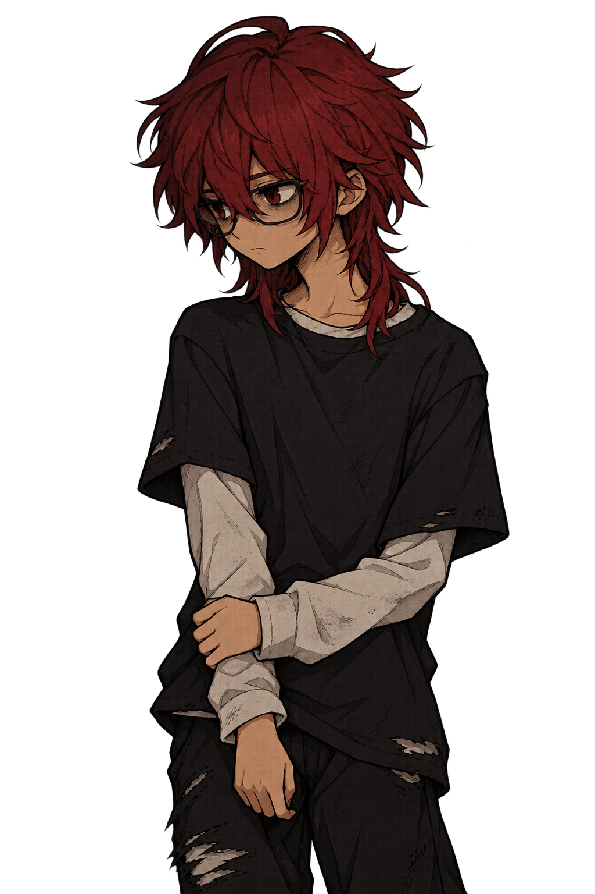
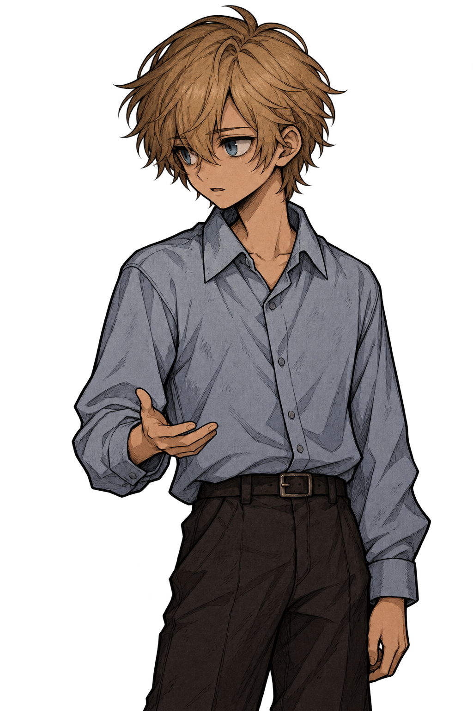
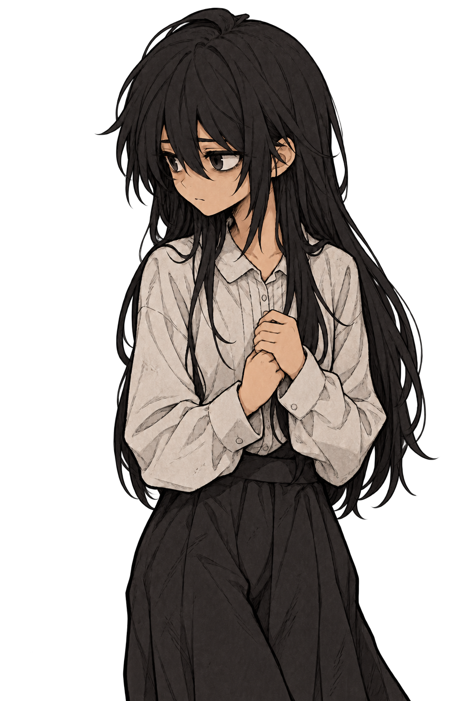
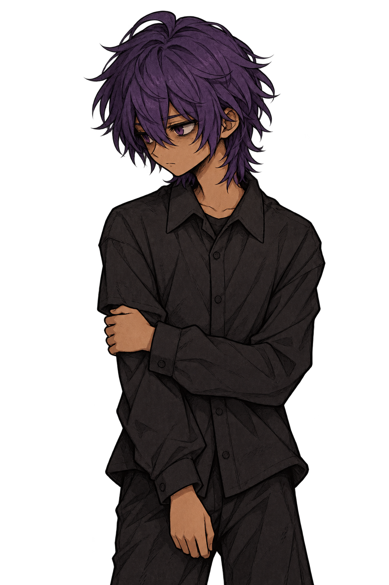
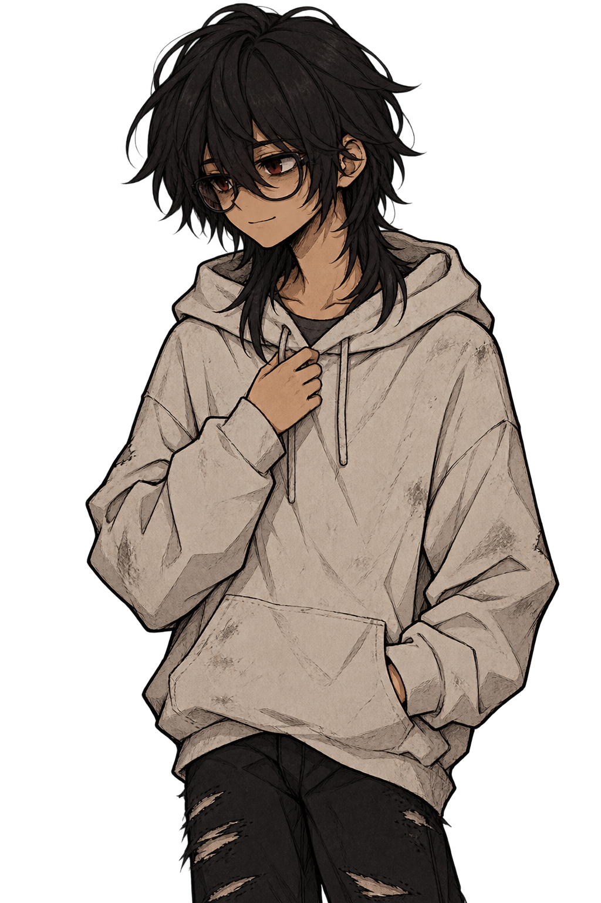
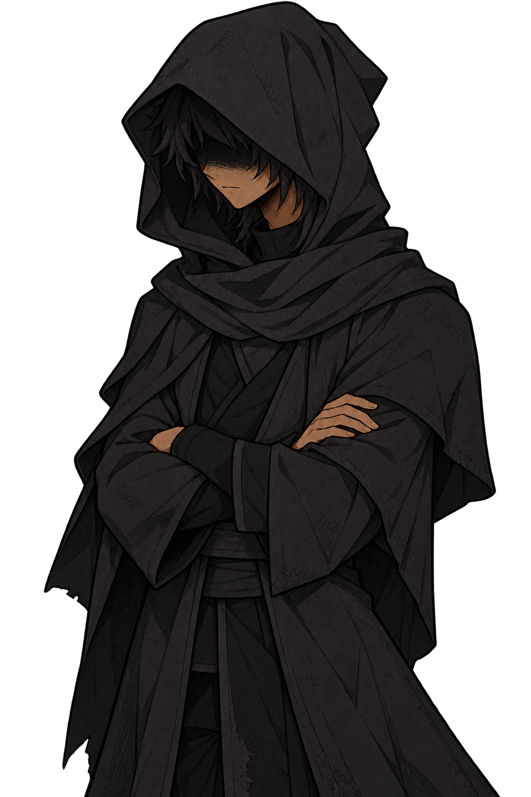
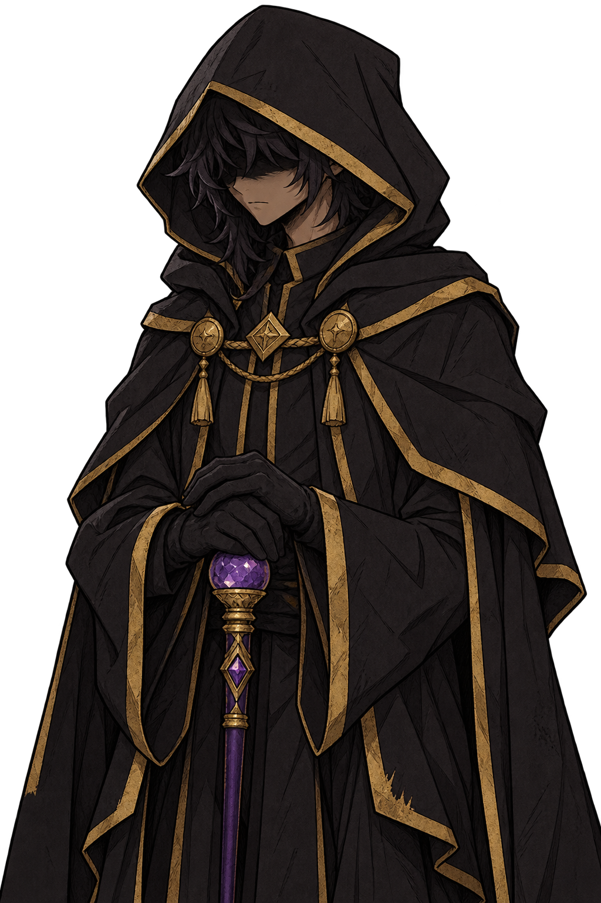
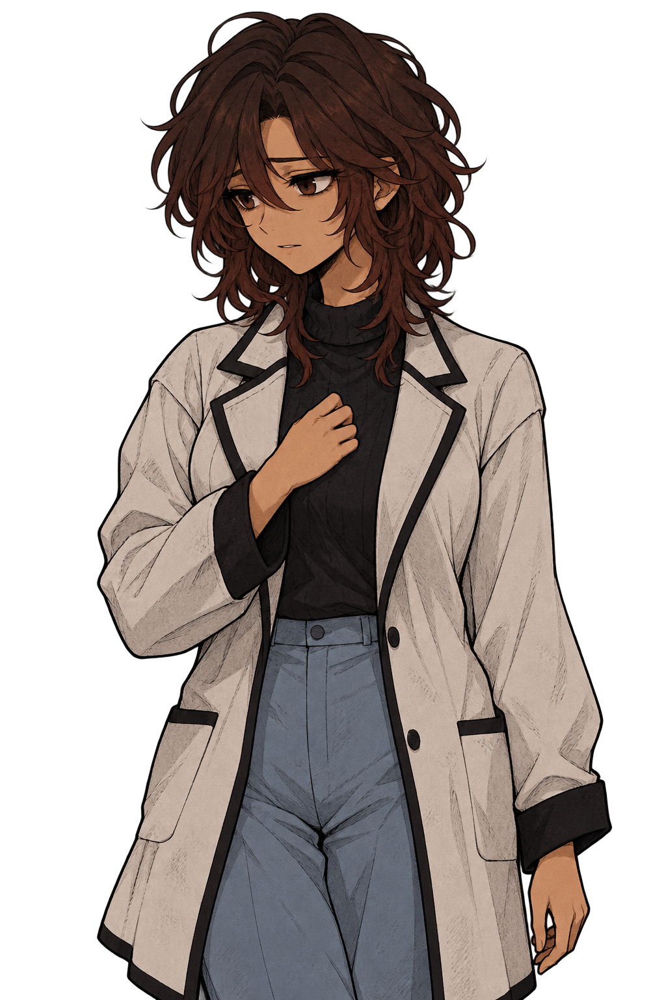
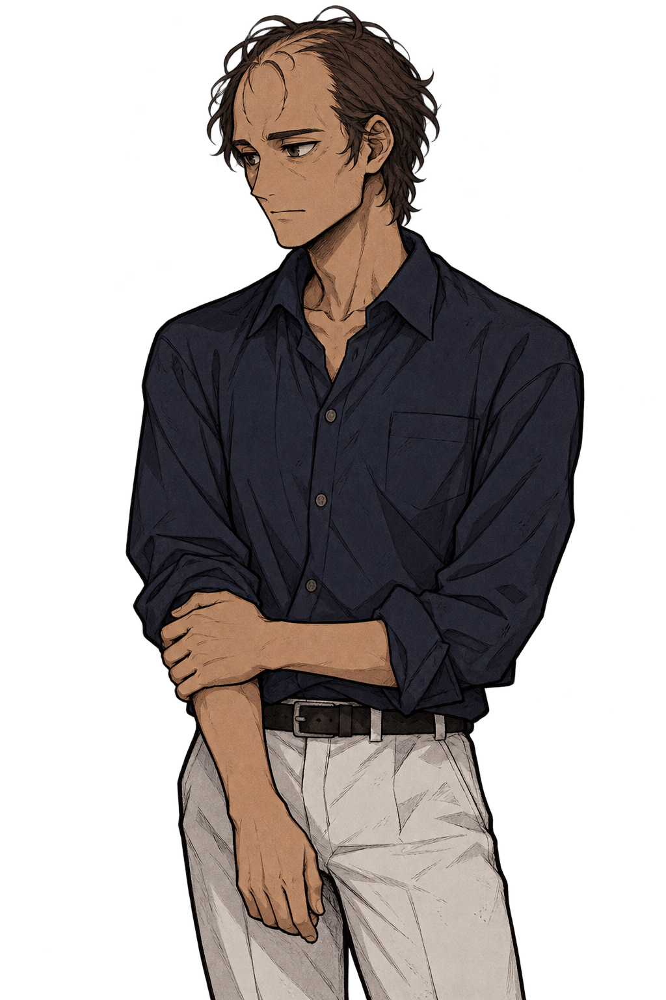

Kali
Atento, segurando a manga oposta.
DON’T BELIEVE · Nove personagens, poses idle e molduras por personagem.

Atento, segurando a manga oposta.

Comunicativo, com um gesto de explicação.

Tímida e observadora, com as mãos unidas.

Reservado, segurando o braço.

Um gesto discreto de acolhimento.

Vigilante, com os braços cruzados.

Composto, apoiado na bengala de ametista.

Acolhedora, com a mão junto ao peito.

Sereno, segurando o antebraço.